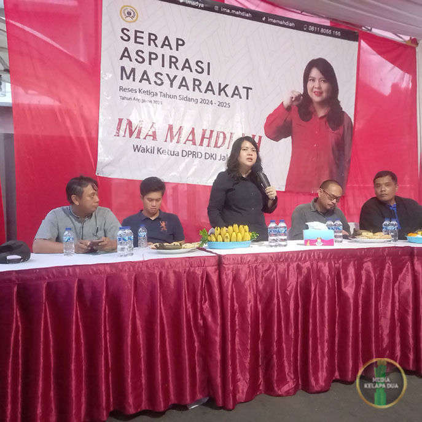

Rapat Koordinasi Bulanan
Rapat koordinasi bulanan RW 08 rutin dilaksanakan pada minggu pertama atau minggu kedua dalam disetiap bulanannya, untuk rapat kali ini berlokasi di belakang Masjid Attaqwa Komplek DPR III RT 006/08 Kelurahan Kelapa Dua, Kecamatan Kebon Jeruk Jakarta Barat.
Rapat koordinasi bulanan kali ini membahas beberapa permasalahan antara lain keamanan lingkungan dibulan Ramadahan, Kebersihan menjelang dan sesudah Idul Fitri 1446 H, inovasi pelayanan QR Code dan lain-lain.
Rapat bulanan kali ini dihadiri Ketua RW 08,LMK, FKDM, Babinsa, Para RT dan Keamanan. Sesudah Rapat bulanan selesai dilanjutkan dengan monitoring wilayah, dalam rangka mengantisifasi kerawanan kantibmasi diwilayah RW 08 dibulan Ramadahan ini.

Bantuan Pembersih Fason
Dalam rangka memberikan kenyamanan dalam beribadah dibulan Ramadhan, PT. Fason Karya Lestari memberikan bantuan pembersih organik ke Masjid dan Musholla yang berada lingkungan RW 08.
Brand FASON berawal dari usaha untuk memberdayakan ilmu kimia untuk menyelesaikan berbagai masalah kebersihan baik untuk lingkungan rumah tangga, perkantoran maupun industry.
FASON berharap memenuhi kebutuhan kebersihan dengan cepat, sesegera mungkin dan efisien dengan hasil kebersihan yang lebih bersih dan bertahan lebih lama.
Team Asset Pemprov DKI Jakarta
Melaksanakan kegiatan pendampingan Team Asset pemprov DKI Jakarta, dalam rangka melaksanakan pengukuran batas-batas lahan yang dimiliki pemprov DKI Jakarta. Kegiatan dihadiri oleh Team Pemprov DKI Jakarta,
Kasi Pemerintahan Kelurahan Kelapa Dua dan Staff, Kepala Sekolah SDN Kelapa Dua 05 Pagi, Ketua RW 08 dan pengurus, LMK dan FKDM.
Posyandu Melati RW 08
Kegiatan Posyandu dan Posbindu Melati RW 08 Kelurahan Kelapa Dua dilaksanakan pada hari selasa di minggu kedua, di Sekretariat RW 08.
Posyandu adalah singkatan dari Pos Pelayanan Terpadu, yaitu wadah pelayanan kesehatan dasar yang diselenggarakan oleh masyarakat. Posyandu merupakan salah satu bentuk Upaya Kesehatan Bersumberdaya Masyarakat (UKBM)
Posbindu adalah singkatan dari Pos Pembinaan Terpadu, yaitu kegiatan untuk memantau dan mendeteksi dini faktor risiko penyakit tidak menular (PTM). Posbindu merupakan upaya kesehatan masyarakat yang dikelola oleh masyarakat.
Himbauan
Waspada demam berdarah (DBD), terutama saat musim hujan dengan melakukan pencegahan melalui 3M Plus (Menguras, Menutup, Mendaur Ulang, dan Mencegah gigitan nyamuk) dan menjaga kebersihan lingkungan.
Pencegahan (3M Plus):
Menguras : Bersihkan tempat penampungan air seperti bak mandi, ember, dan vas bunga secara rutin. Menutup : Tutup rapat tempat penampungan air agar nyamuk tidak dapat bertelur. Mendaur Ulang : Manfaatkan barang bekas yang bisa menjadi tempat berkembang biaknya nyamuk. Mencegah Gigitan : Gunakan obat anti nyamuk, pasang kelambu, dan hindari genangan air di sekitar rumah.
Gejala DBD :
Demam tinggi yang tiba-tiba.
Sakit kepala, nyeri di belakang mata, nyeri otot, dan nyeri sendi.
Mual, muntah, dan ruam pada kulit.
Pada kasus parah, dapat terjadi pendarahan hebat dan syok.
Penanganan :
Segera periksakan diri ke dokter jika mengalami gejala DBD.
Pastikan asupan cairan tercukupi untuk mencegah dehidrasi.
Istirahat yang cukup.
Konsumsi obat penurun panas seperti parasetamol (hindari aspirin dan ibuprofen).
QR Code Pelayanan Warga
Untuk memberikan pelayanan terbaik kepada warga (Pelayanan prima). Pengurus RW 08 Kelurahan Kelapa Dua meluncurkan inovasi pelayanan prima, yang dilakukan dengan memberikan pelayanan yang berkualitas, memuaskan, dan tepat waktu
Prinsip pelayanan prima antara lain Bersikap ramah, responsif, dan kompeten. Berorientasi pada kebutuhan dan kepentingan warga. Menjunjung tinggi keadilan, efisiensi, transparansi dan akuntabilitas, Menindaklanjuti setiap masukan warga dan menjaga kepercayaan warga.
Dengan melakukan Scan barcode pada sticker atau melalui link https://rw08kelapadua.web.id dan media.rw08kelapadua.web.id warga dapat ngurus pelayanan dengan mudah sesuai dengan kebutuhan warga.
QR Code Pelayanan Digital Warga RW 08 diharapkan dapat memudahan warga untuk mendapatkan pelayanan berupa : Form Pengajuan adalah surat keterangan untuk mengurus dokumen-dokumen warga, Form Pendatang adalah surat keterangan lapor diri bagi pendatang yang ingin bertempat tinggal dilingkungan RW 08, baik tinggal sementara (pengontrak) atau tetap. Form Laporan Kematian Warga adalah surat keterangan yang dikeluarkan oleh pengurus RT/RW dan Puskesmas apabila ada warga mendapatkan musibah kematian.